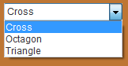
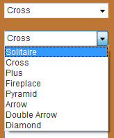
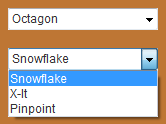
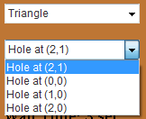

Board Types and Setups
Changing Board Types
Board types can be changed by using the drop down lists on the side panel to the right of the board. The drop down list on the top is used to change the type of board.

Changing the board type
Changing Board Setups
Board setups can be changed by using the drop down lists on the side panel to the right of the board. The drop down list on the bottom is used to change the setup of the board. There are different peg-setups for each different board type.

Changing the Cross board setup

Changing the Octagon board setup

Changing the Triangle board setup